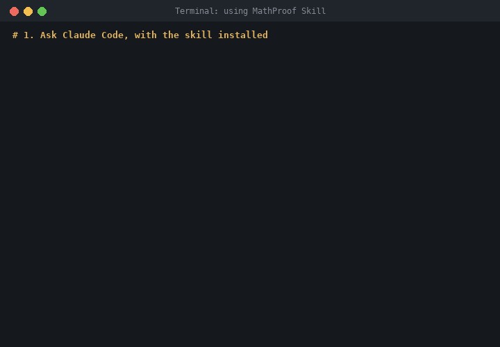
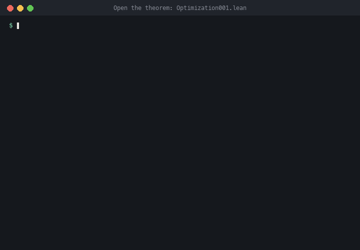

Have a well-defined problem? This skill helps your agent prove it or disprove it, and checks the answer in Lean.
AI-written proofs fail quietly: the algebra looks polished, but one unsupported implication is buried in the middle. MathProof Skill makes your agent audit every step adversarially, find the first step that isn't earned, and then machine-check the result in Lean.
A real session on worked example 5: the claim "a critical point is a global minimum". Left, the steps in the terminal. Right, the result opened: the report and the Lean file the kernel checked. Below, the theorem written out, with its proof, the Lean check, and a numerical check in R.

/mathproof-skill; the skill records the claim, runs the Lean check on the refutation, and reads back the derived status.
mathproof report summarizes the record; the Lean file holds the exact statement and its proof.The submitted argument. Let $f:\mathbb R\to\mathbb R$ be differentiable with $f'(x_0)=0$. Then $x_0$ is a critical point, so $f$ attains its global minimum at $x_0$.
Audit. The first unsupported step is "critical point, so global minimum". Fermat's theorem gives the necessary condition: an interior minimum of a differentiable function is a critical point. The argument uses its converse, which is not a theorem. So the skill tried to refute the claim, and succeeded.
There exist a differentiable function $f:\mathbb R\to\mathbb R$ and a point $x_0\in\mathbb R$ with $f'(x_0)=0$ such that $f$ does not attain its global minimum at $x_0$. That is, it is false that $f(x_0)\le f(x)$ for all $x\in\mathbb R$.
Proof. Let $f(x)=-x^2$ and $x_0=0$. We check the three requirements in turn.
Hence $f$ is differentiable and $f'(0)=0$, yet $f$ does not attain its global minimum at $0$. In fact $f(x)=-x^2\le0=f(0)$ for all $x$, so $0$ is the global maximum. $\blacksquare$
Let $f:\mathbb R\to\mathbb R$ be convex and differentiable, and let $f'(x_0)=0$. Then $f(x_0)\le f(y)$ for every $y\in\mathbb R$.
Proof. Fix $y\ne x_0$. For a convex differentiable function, the derivative at a point is bounded by the slopes of chords through that point: $$f'(x_0)\le\frac{f(y)-f(x_0)}{y-x_0}\ \ (x_0<y),\qquad \frac{f(x_0)-f(y)}{x_0-y}\le f'(x_0)\ \ (y<x_0).$$ Put $f'(x_0)=0$ and multiply by the positive denominator. Either case gives $f(x_0)\le f(y)$. $\blacksquare$
Machine check. In this session the Lean kernel accepted Theorem 1, stated as the negation of the claim. It uses only Lean's standard axioms, and its recorded status is kernel-passed-local UNVERIFIED. Theorem 2 is isMinOn_of_deriv_eq_zero in Optimization002.lean, which the eval suite checks in CI. Each step of the proof of Theorem 1 has a matching line in the Lean proof:
| Proof step | Lean line in claim_false |
|---|---|
| Assume the claim, aiming for a contradiction | intro h |
| 1. $f(x)=-x^2$ is differentiable | have hd : Differentiable ℝ (fun x => -x ^ 2) := by fun_prop |
| 2. $f'(0)=0$ | have hstat : deriv (fun x => -x ^ 2) 0 = 0 := by simp |
| 3. The claim would give $f(0)\le f(1)$ | have := h _ hd 0 hstat (mem_univ 1) |
| That says $0\le-1$, which is false | norm_num at this |
def Claim : Prop :=
∀ f : ℝ → ℝ, Differentiable ℝ f → ∀ x, deriv f x = 0 → IsMinOn f univ x
theorem claim_false : ¬ Claim := by
intro h
have hd : Differentiable ℝ (fun x : ℝ => -x ^ 2) := by fun_prop
have hstat : deriv (fun x : ℝ => -x ^ 2) 0 = 0 := by simp
have := h _ hd 0 hstat (mem_univ 1)
norm_num at thisNumerical check in R. check_sample.R tests both theorems numerically. It was recorded in the same ledger with experiment run --lang r --seed 1, and experiment rerun reproduced it exactly. These runs are evidence, not proof: they don't change the status.
# Theorem 1: f(x) = -x^2 at x0 = 0
central differences, h = 1e-1 … 1e-6: max |f'(0) estimate| = 0
f(1) = -1 < f(0) = 0; f(0) is the maximum on a grid over [-10, 10]
→ 1 counterexample candidate to the original claim
# Theorem 2: 1,000 random convex f, 200 random y each
failures with f(y) < f(x0): 0
smallest gap f(y) - f(x0): 2.2e-09Language models are trained to reach the requested conclusion. Ask one for a proof and you usually get one, even when the claim is false. The failure is rarely an arithmetic slip. It is a theorem applied outside its hypotheses, a limit swapped without justification, an "obviously" that isn't.
And an informal audit, however careful, is still informal. So the skill doesn't stop there.
Then formalize. A passing Lean check, with only the standard axioms, is the only thing the skill calls machine-checked. And because a correct proof of the wrong statement verifies nothing, every check comes with a fidelity table comparing the Lean statement to the informal one.
A chatbot gives a fluent answer you must still check yourself, and rarely says it is unsure. MathProof Skill adds:
sorry, custom axioms, and native_decide.LEAN-CHECKED (partial), NOT FORMALIZED, UNVERIFIED) instead of a confident guess.Four modes — PROVE, AUDIT, EXPLAIN, RESEARCH — share one workflow. Every verdict carries a Lean status. A fifth, INVESTIGATE, keeps a durable record of one claim.
A single proof attempt is the inner loop. When it fails, the cause may be a missing assumption or a wrong conjecture, not a missing tactic, so the work moves outward. Every loop reads and writes the same hash-chained ledger. Each loop is labeled with what works today.
Turn proved results into broader theorems and new questions.
Are we proving the right theorem, under the right assumptions?
Can we prove or disprove this exact claim?
sorry and custom axioms rejected.Shared by all three loops. Append-only and hash-chained; the status of every claim is derived from it, never typed in.
| Loop | The question it answers | When it fails, it… | Status |
|---|---|---|---|
| 1 · Verification | Can we prove or disprove this exact claim? | Repairs a lemma, searches for counterexamples, reruns Lean. | Today |
| 2 · Discovery | Are we pursuing the right theorem, under the right assumptions? | Returns to the literature and the conjecture with what it found. | Partly |
| 3 · Generalization | What deeper or more general result is there? | Poses a new problem and restarts the whole process. | Planned |
Why the middle loop matters. When Lean can't close a goal, another tactic is often the wrong fix. The goal may need an assumption the statement left out, a lemma under it may be false, or the conjecture itself may need to change. So a failure is recorded, not hidden, and the work can step out to Loop 2 instead of retrying forever.
main, not yet in a releaseFor a claim worth keeping, INVESTIGATE mode records everything that happens to it — Lean checks, numerical experiments, fidelity tables, notes — in an append-only ledger. The status is derived from that record by the tool. The agent never writes a status, and one it writes has no effect.
mathproof.py init inv
mathproof.py claim add --dir inv --id inv/c1 --kind theorem \
--text "The informal claim."
mathproof.py check --dir inv --claim inv/c1 --polarity claim \
--decl Full.Name --project <lean-project> File.lean
mathproof.py experiment run --dir inv --claim inv/c1 \
--code check.R --lang r --seed 1
mathproof.py status --dir inv --claim inv/c1
mathproof.py verify inv"headline": "kernel-passed-local",
"verdict": "UNVERIFIED",
"lean_status": "KERNEL-PASSED (local; claim, fidelity: none)",
"computational": { "runs": 1, "candidates": 0 }
…
OK: 10 checks re-run.experiment rerun checks it reproduces. It can flag a counterexample candidate. It can't raise a status.verify trusts nothing recorded. It re-runs every Lean check with the installed checker. A recorded PASS counts for nothing until the re-run agrees.Today the strongest result is kernel-passed-local with the verdict UNVERIFIED. A check on your own machine can't stand in for a clean-machine check plus a person's signature, so nothing reaches VALID or INVALID through this mode yet. The local ledger catches accidents and simple edits, not a determined agent that rewrites it whole. That limit is in the docs, not hidden.
An authoritative tier: a sandboxed Linux CI run of lake comparator, which in our tests rejected every attack we built, with and without Mathlib. Then a signed human review of fidelity. We're already using the workflow on research-level results from the matrix-sketching literature, with formal proofs and numerical checks kept in one ledger.
Each example is a benchmark case. The Lean code lives in lean/MathProofSkill/Evals/, and the output is from lean_check.py.
Every continuous function on $(0,1)$ attains a maximum.
The extreme value theorem needs a compact domain. The skill formalizes the claim itself and proves its negation, using $f=\mathrm{id}$:
def Claim : Prop :=
∀ f : ℝ → ℝ, ContinuousOn f (Ioo 0 1) → ∃ x ∈ Ioo (0 : ℝ) 1, IsMaxOn f (Ioo 0 1) x
theorem claim_false : ¬ Claim := by
intro h
obtain ⟨x, ⟨hx0, hx1⟩, hmax⟩ := h id continuousOn_id
have hy : (x + 1) / 2 ∈ Ioo (0 : ℝ) 1 := ⟨by linarith, by linarith⟩
have : (x + 1) / 2 ≤ x := hmax hy
linarithPASS: lean/MathProofSkill/Evals/Analysis001.lean
…Analysis001.Claim : Prop
:= ∀ (f : ℝ → ℝ), ContinuousOn f (Set.Ioo 0 1) → ∃ x ∈ Set.Ioo 0 1, IsMaxOn f (Set.Ioo 0 1) x
…Analysis001.claim_false : ¬…Analysis001.Claim
axioms: propext, Classical.choice, Quot.soundThe checker prints the body of Claim, so you can confirm the refuted statement is the informal one and not a weaker look-alike.
The square of an even integer is even. Proof: $n=2k\Rightarrow n^2=2(2k^2)$.
A skeptical auditor must also accept correct work. The fidelity check catches one encoding detail: Mathlib defines Even n as $\exists r,\ n=r+r$, not $n=2r$.
theorem even_sq (n : ℤ) (h : Even n) : Even (n ^ 2) := by
obtain ⟨k, rfl⟩ := h -- n = k + k
exact ⟨2 * k ^ 2, by ring⟩ -- (k + k)^2 = 2k^2 + 2k^2For every square-integrable $X$, $\mathbb{E}[X^2]=(\mathbb{E}[X])^2$.
Counterexample: $X=\pm1$ with probability $\tfrac12$ each, so $\mathbb{E}[X]=0$ but $\mathbb{E}[X^2]=1$. The Lean file builds that probability space, proves $X\in L^2$, computes both moments, and derives ¬ Claim:
theorem mean_X : ∫ b, X b ∂P = 0 := by rw [integral_P]; norm_num [X]
theorem second_moment_X : ∫ b, X b ^ 2 ∂P = 1 := by rw [integral_P]; norm_num [X]
theorem claim_false : ¬ Claim := by
intro h
have := h X X_memLp
rw [mean_X, second_moment_X] at this
norm_num at thisIn a finite undirected graph, the degrees sum to twice the number of edges.
Mathlib's SimpleGraph has no loops or multi-edges, so the Lean theorem covers only part of the claim. The skill says so instead of overclaiming:
| Informal | Lean | Match |
|---|---|---|
| finite graph | [Fintype V] | faithful |
| undirected graph | SimpleGraph V | partial: no loops or multi-edges |
| sum of degrees = 2·edges | ∑ v, G.degree v = 2 * G.edgeFinset.card | faithful |
A sorry hidden behind a custom tactic.
The source contains no literal sorry, so a text search misses it. The axiom audit does not:
macro "trust_me" : tactic => `(tactic| exact sorryAx _ false)
theorem t (n : Nat) : n * 1 = n := by trust_meFAIL: tests/lean_check/fail_hidden_sorry.lean
✗ Lean warning: declaration uses `sorry`
✗ t depends on non-standard axioms: sorryAxThe same audit rejects custom axioms and native_decide.
One of the most-cited results in first-order optimization, proved in PROVE mode as a chain of named lemmas, each mirrored by a Lean theorem. Nothing is assumed beyond Mathlib's definitions of convexity and Lipschitz continuity.
Let $f$ be convex and differentiable on a real Hilbert space, with $L$-Lipschitz gradient. Gradient descent $x_{k+1}=x_k-\frac1L\nabla f(x_k)$ satisfies
$$f(x_k)-f(x^\star)\;\le\;\frac{L\,\|x_0-x^\star\|^2}{2k}\qquad(k\ge1).$$
| Step | Statement | Lean |
|---|---|---|
| Descent lemma | $f(y)\le f(x)+\langle\nabla f(x),y-x\rangle+\frac L2\|y-x\|^2$ | descent_lemma |
| First-order convexity | $f(x)+\langle\nabla f(x),y-x\rangle\le f(y)$ | convex_first_order |
| Sufficient decrease | $f(x_{k+1})\le f(x_k)-\frac1{2L}\|\nabla f(x_k)\|^2$ | sufficient_decrease |
| One-step progress | $f(x_{k+1})-f^\star\le\frac L2\bigl(\|x_k-x^\star\|^2-\|x_{k+1}-x^\star\|^2\bigr)$ | one_step |
| Lyapunov bound | $\Phi_k=k(f(x_k)-f^\star)+\frac L2\|x_k-x^\star\|^2$ is nonincreasing | lyapunov |
| Rate | $k\,(f(x_k)-f^\star)\le\frac L2\|x_0-x^\star\|^2$ | gd_rate, gd_rate' |
theorem gd_rate' {f : E → ℝ} {L : ℝ≥0} (hL0 : 0 < L) (hf : Differentiable ℝ f)
(hL : LipschitzWith L (∇ f)) (x : ℕ → E)
(hx : ∀ k, x (k + 1) = x k - (1 / (L : ℝ)) • ∇ f (x k))
(hconv : ConvexOn ℝ univ f) {xstar : E} (k : ℕ) (hk : 0 < k) :
f (x k) - f xstar ≤ L * ‖x 0 - xstar‖ ^ 2 / (2 * k)PASS: lean/MathProofSkill/Evals/Optimization003.lean
…Optimization003.gd_rate' : … → ∀ {xstar : E} (k : ℕ), 0 < k →
f (x k) - f xstar ≤ ↑L * ‖x 0 - xstar‖ ^ 2 / (2 * ↑k)
axioms: propext, Classical.choice, Quot.sound"$x^\star$ is a minimizer" is never used — Lean's linter flagged it. The bound holds for every reference point $x^\star$; minimality only matters for reading $f(x_k)-f(x^\star)$ as the optimality gap. The formal theorem drops it and is strictly stronger.
Lean defines $a/0=0$, so a naive statement "for all $k$" would be true at $k=0$ for the wrong reason. The primary theorem is stated division-free, and the textbook form is derived only for $k\ge1$.
python3 skill/scripts/lean_check.py File.lean --require main_theoremA check passes only if all of these hold. Anything else is reported as LEAN-FAILED or NOT FORMALIZED, never quietly upgraded.
sorry anywhere, including behind macros.propext, Classical.choice, Quot.sound — no custom axioms, no native_decide.implemented_by, @[extern], and unsafe are refused too.x / 0 = 0, truncated ℕ subtraction, deriv of non-differentiable functions.In Claude Code, install it as a plugin:
/plugin install mathproof-skill --marketplace Ztang-Yit-Xiaang/mathproof-skillOr install it for every agent on your machine, along with the Lean project:
git clone https://github.com/Ztang-Yit-Xiaang/mathproof-skill.git
cd mathproof-skill && ./scripts/install.shThe installer finds each agent you have and links the Lean project so the checker can find Mathlib. Re-run to update; scripts/uninstall.sh reverses it. Lean needs elan.
~/.claude/skills~/.codex/skills~/.gemini/config/skillsThen ask your agent:
Use @mathproof-skill to audit this proof and machine-check the verdict in Lean.